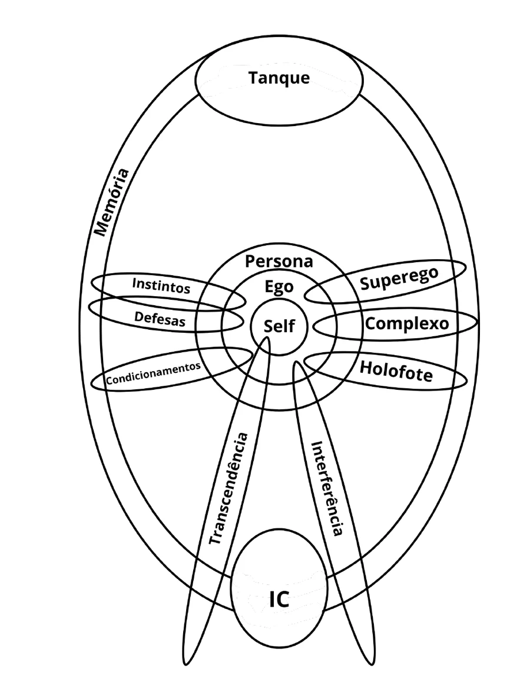
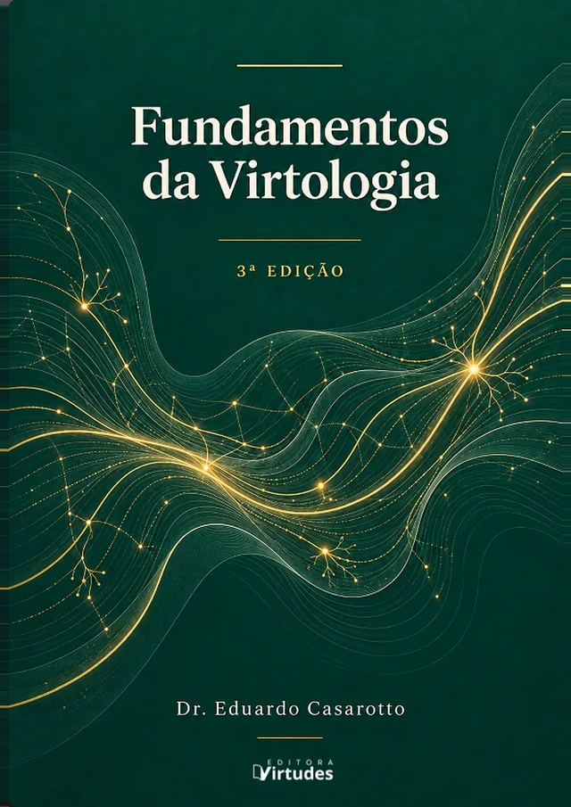

Faixa Primitiva
- Quem manda
- Tronco cerebral: instinto e condicionamento
- Como vê o outro
- O outro não existe como outro. Só ambiente e bando
- O que move
- Grupo 1 - Necessidades Primitivas
Virtologia Em profundidade
Virtologia em profundidade
O eixo central da Virtologia. O quanto o cérebro está estruturado em virtudes decide quem manda na pessoa, como ela enxerga o outro e o que a move.
Quanto mais primitivo, mais inconsciente; quanto mais evoluído, mais consciente. Muda-se, então, toda a dinâmica do aparelho psíquico.
Dr. Eduardo Casarotto
As Faixas de Evolução neurológica não vêm de outras tradições: são a escala da própria Virtologia. Grandes autores enxergaram, cada um, um pedaço do que ela organiza. Veja onde cada um parou e onde a Virtologia vai além.
Viu que as necessidades se organizam em níveis. Não explicou por que alguém num nível espiritual alto ainda tem compulsão sexual.
A faixa explica: as necessidades não são uma escada que se abandona. São forças que ficam a vida toda e mudam de intensidade conforme a faixa.
Viu o sujeito capturado pela linguagem, falado por ela sem saber.
Na Virtologia, isso tem lugar exato: é o funcionamento das faixas primitivas, com o superego no comando.
Viu a individuação, o tornar-se EU, que só acontece à medida que o inconsciente vem à consciência.
Na Virtologia, ela é uma virtude com protocolo, não um destino raro reservado a poucos.
Viu o simulacro e a hiper-realidade.
A Virtologia mostra o que faltava: o quanto alguém vive mergulhado no simulacro depende da faixa. O primitivo vive submerso nos signos; o evoluído atravessa os signos.
Na Virtologia, as Faixas de Evolução neurológica não são um detalhe da teoria. São o fundamento sobre o qual todo o resto se ergue.
Uma faixa é um modo de funcionamento da psique. E o que define esse modo é uma coisa só: quanta estrutura em virtudes a pessoa já inscreveu no próprio sistema nervoso.
Mais estrutura, outro cérebro. E um cérebro diferente percebe o mundo de outro jeito, reage de outro jeito e passa a ter necessidades diferentes.
Faixa não mede inteligência. Nem escolaridade, nem sucesso, nem cultura, nem domínio técnico. Mede consciência.
Alguém de grande intelecto pode estar numa faixa baixa e entender toda a parte científica de um problema sem que isso o mova um milímetro. O intelecto que compreende, mas não transforma, é o que mais engana: parece evolução, mas é só erudição.
A pergunta não é quem entende mais. É quem está mais estruturado.
Elas formam uma subida contínua. Não são gavetas, nem degraus que se sobem de uma vez: são modos de funcionar que vão mudando à medida que o cérebro ganha estrutura.
Quadro sinótico das sete faixas, como está no Fundamentos da Virtologia, terceira edição.
Existe uma inversão que atravessa todas as faixas. Ela é, talvez, a chave de todo o sistema.
Na pessoa mais primitiva, quem manda não é ela. Quem manda é o instinto, o condicionamento, o superego herdado, com suas regras e punições, e a couraça de caráter que ela ergueu para se defender. Ela é falada pela linguagem, conduzida pela persona e governada por mecanismos que funcionam sem que ela perceba.
À medida que a estrutura em virtudes se inscreve e a faixa sobe, esse comando volta. Nas faixas mais conscientes, quem passa a mandar é a personalidade estruturada da pessoa: o EU, agindo a partir do Self.
Daí o aparente paradoxo: quanto mais primitivo, mais inconsciente. Quanto mais evoluído, mais consciente. Evoluir, na Virtologia, é exatamente isso: tornar consciente o que era inconsciente, e devolver à pessoa o comando que estava nas mãos do primitivo, do superego e da couraça.
No corpo, é a migração do comando do tronco cerebral e do sistema límbico em direção ao lobo frontal, onde moram a decisão consciente e o desejo sobre a própria vida.

Faixa 1
Domínio do instinto e do ambiente · mimetismo coletivo · funcionamento atemporal
A pessoa funciona quase inteira por impulsos básicos: sobrevivência, segurança, prazer. Medo e raiva predominam, e os condicionamentos são mais fortes do que qualquer consciência das próprias ações. O passado é vivido como presente perpétuo.
O outro praticamente não existe como outro. Existe o ambiente e o bando, e a pessoa é uma extensão deles: roupas, músicas, gostos, tudo reflete o que o meio impõe. Um estímulo neutro vira ameaça, e a reação é ataque, fuga ou submissão.
Faixa 2
Auge do orgulho · domínio do paladar e da pulsão · busca de prazer, conforto e pertencimento
A pessoa experimenta o mundo pelos sentidos e decide pelo que sente bem agora, sem pensar nas consequências. Segue o grupo sem consciência da própria identidade: é a imersão máxima no simulacro, quando já não se distingue o real da construção artificial.
O outro é sempre objeto: de desejo, de medo, de ganho. Quando alguém nessa faixa parece cuidar do outro, está agindo por um ganho ou por medo de perder. Por isso, dizer a essa pessoa que ela não considera o outro só produz culpa: o cérebro dela ainda não tem como perceber o outro como outro.
Faixa 3
Persona forte · couraça de caráter · busca de poder, dominância e fama
Surge uma consciência básica das emoções e do impacto das próprias ações. Mas é a faixa das formas mais elaboradas do orgulho. Aqui podem estar pessoas de grande intelecto, movidas por reconhecimento e vaidade.
Quem manda é a máscara. A pessoa tenta mostrar o que não é para ter importância, e é nesta faixa que se concentra a maior parte dos transtornos de personalidade. O outro constrói o sujeito: ele só se sente existindo no espelho do aplauso alheio.
Faixa 4 · o limiar
"Já sei o que devo fazer, mas ainda não faço"
É o ponto de virada de todo o processo. A pessoa enxerga muito mais sobre si e sobre as consequências do que faz, mas ainda não consegue agir à altura do que enxerga. Daí a culpa, e a luta entre o que compreende e o que ainda não consegue executar.
A imagem é a de quem olha por cima de um muro: de repente vê muito mais do que antes, mas ainda não tem todas as competências para reagir ao que vê. Pela primeira vez, aparece o outro como realidade, com vontade e problemas próprios. Ainda de forma instável.
Faixa 5
Domínio do lobo frontal · o EU movido pelo Self · o outro como realidade
Aqui se completa a inversão: quem manda é a personalidade estruturada da pessoa. Ela deixa o funcionamento atemporal do inconsciente primitivo e passa a habitar o presente real. A persona, quando aparece, é usada como instrumento, não como prisão.
O outro deixa de ser objeto, tela ou espelho. O interesse não é mais ser cuidado, é cuidar. As necessidades de antes continuam existindo, mas com muito menos força. A importância vira dignidade: dá para ser ignorado sem se ferir.
Faixa 6
Desprendimento da matéria, do desejo e das convenções · o irmão universal
Há busca ativa de sentido, e as ações são guiadas por princípios altruístas. O comando está no Self. O outro já não é só o próximo concreto: é o irmão universal, e a fronteira entre o meu grupo e o grupo dos outros se dissolve. Amor ao próximo e caridade se tornam os grandes objetivos.
Faixa 7 · horizonte
Orgulho inexistente · amor incondicional · plena conexão com o todo
É a faixa mais elevada, e não é alcançável para o humano comum. É um horizonte, encarnado em figuras como Jesus e Buda. Funciona como o norte que dá direção a toda a subida, mesmo sem ser alcançado.
As faixas não se abandonam ao subir. E ninguém mora numa faixa só.
A mesma pessoa pode estar em Sentir no perdão, em Pré-Desenvolvimento na paciência, em Sensação na sexualidade e em Consciência Parcial na honestidade.
Por isso a clínica virtológica não classifica a pessoa numa faixa. Ela mapeia a faixa virtude por virtude, assunto por assunto. Esse mapa é uma das primeiras tarefas do trabalho terapêutico.
Não. A faixa não julga a pessoa. Ela descreve o modo físico e funcional em que o cérebro dela está operando agora. E ela muda: o trabalho todo existe para isso.
Não. Temperamento não sobe nem desce faixa. Uma pessoa intensa, dominante e de ritmo alto pode estar em Sentir. Uma pessoa sensível e reflexiva pode estar na Faixa Primitiva. O temperamento é o veículo; a faixa é a estrada percorrida.
A faixa não é conquista definitiva. Ela oscila, e desce. O caminho de subida tem uma ordem: desenvolver virtudes, estruturar o cérebro, fortalecer o ego, subir de faixa e mudar a Lei do Fluxo.
Se a faixa depende de quanto o cérebro está estruturado, a pergunta é: o que significa estruturar um cérebro? Três pesquisadores corroboram a tese da Virtologia.
Na psicobiologia da cura, mostra que cada experiência significativa vira proteína, e a proteína vira estrutura cerebral nova. A informação reorganiza fisicamente o cérebro.
Ao mapear os peptídeos, mostra que a psique se estende pelo corpo inteiro. A faixa não é um estado só da cabeça: é um modo de funcionar de todo o organismo.
Nobel por mostrar as bases moleculares da memória: a aprendizagem se inscreve mudando a força e o número das conexões entre neurônios. É o mecanismo pelo qual a repetição grava.
A ciência sabia que a informação muda o cérebro, mexe no cortisol e até na imunidade. Mas não dizia qual informação deixa esse cérebro saudável.
A Virtologia responde: as 33 virtudes. Cada virtude é um grande grupo de informações organizado em torno de um tema, e o tamanho desse grupo é o que determina o quanto o cérebro está estruturado naquele assunto. Rossi descreve o quê. Kandel descreve o como. A Virtologia diz qual: quais informações inscrever para subir de faixa.
Se cada faixa tem um funcionamento próprio, o tratamento não pode ser o mesmo para todas. Essa é a consequência prática mais importante.
Nas faixas mais primitivas, a abordagem é mais comportamental, com estrutura e prescrição concreta, porque a pessoa ainda não tem o aparelho reflexivo que sustentaria um trabalho mais elaborado. Nas faixas mais altas, ela pode ser mais filosófica e introspectiva.
O terapeuta virtológico troca a mão, o manejo e a técnica conforme a faixa. O que muda não é a dificuldade do mesmo trabalho: é a natureza do aparelho com que se trabalha.
E muitas vezes uma queixa que parece intratável, uma depressão que não cede ou um luto que não se elabora revela, pela lente das faixas, que a pessoa ainda não tem a estrutura em virtudes para sustentar aquela elaboração.
A faixa não sobe por conselho, nem por entender. Sobe por trabalho neuroplástico sustentado. Inscrever a estrutura é o trabalho; a faixa é o resultado.

Para ir além
As Faixas de Evolução neurológica são a Parte III do livro, ao lado da Lei do Fluxo, do aparelho psíquico, do Inconsciente Operacional e das 33 virtudes.